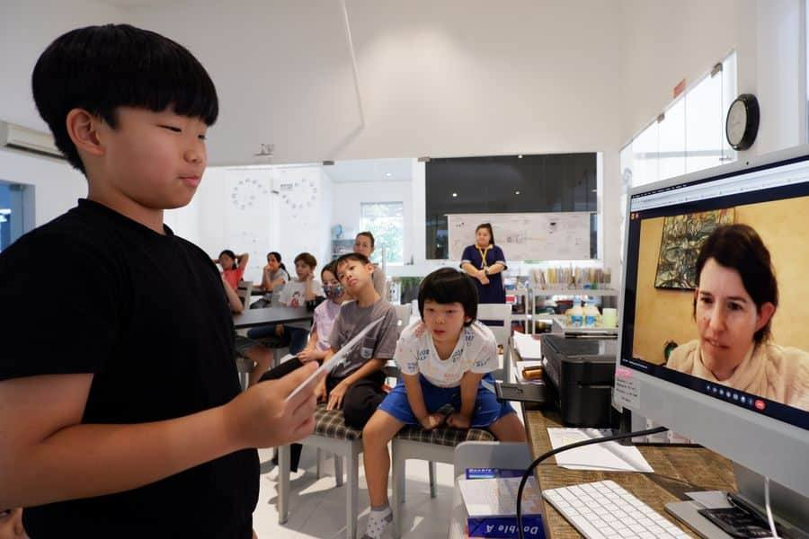

Armonia · Science
Real questions, tested.
Science here is hands-on investigation. Children start from their own questions, test their thinking with real materials, and follow the evidence wherever it leads.
What a session feels like
A workshop, not a worksheet.
Science sessions start from children's own questions, and children test their thinking with real materials and careful observation. They practise the habits scientists actually use: noticing closely, predicting, checking and trying again. That is how children already work across ELC. One Year 4 class designed a planet of its own, debating its size, core and terrain as a group, then put its questions directly to a NASA scientist, whose advice was to stay curious and keep asking. The same habits carry into the garden, where children watch what grows and work out why.
From the ELC blog

Session details for 2026-27 are being settled now. They land here as they are confirmed.